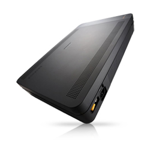

OfficeServ7070
|  |
Ключевые характеристики:
характеристики
|
|
Техническое оснащение одного узла АТС размещается в одном блоке, который предназначен для настенного монтажа. Базовый блок системы OfficeServ7070 является моноблочным решением и не имеет никаких дополнительных блоков для расширения. Все расширение системы осуществляется путем добавления интерфейсных карт и модулей непосредственно в базовый блок Блок состоит из материнской платы BMP с плато местами для установки дополнительной карты расширения E8S и интерфейсных модулей, встроенного источника питания системы и боковой панели для подключения периферийных устройств и кабелей. Основная плата BMP из двух частей. BMP (Основная часть) и BMP (B8S часть). Плата BMP (Основная часть) содержит 4 встроенных DLI порта, два плато места для установки интерфейсных модулей и одно плато место для установки модуля Modem. Плата BMP (B8S часть) содержит 4 встроенных TRK и 8 SLI портов и три плато места для установки интерфейсных модулей. Дополнительная карта расширения E8S содержит 8 встроенных SLI портов и три плато места для установки интерфейсных модулей. |
||||||||||||
|
периферийные возможности
PRM (ISDN PRI – один на систему), 4 TRM, 4 DLM, 4 SL2, 2 BRM (ISDN BRI), Modem (один на систему). Модули 4 TRM и Modem совместимы с системой OfficeServ7100. |
||||||||||||
|
межсетевое взаимодействие
Система OfficeServ 7070, так же как и все системы Samsung OfficeServ, поддерживает протокол объединения в единую копоративную сеть SPNet. Объединяя в единую сеть несколько узлов (до 99) систем OfficeServ, существует возможность достичь емкости 2000 портов, при этом сохранить единый номерной план, так что корпоративные пользователи не заметят того, что они подключены к разным узлам сети. Это возможно благодаря реализации протокола Q-SIG для линий ISDN PRI или при объединении систем по IP сетям по протоколу SPNet (Q-SIG over IP). |
||||||||||||
|
В системе OfficeServ7070 VoIP шлюз является интегрированным узлом процессорной карты. Он дает возможность организовать передачу голосового трафика через сети Интернет по 8 VoIP каналам одновременно (для активизации встроенных VoIP кодеков требуется лицензионный ключ). Это открывает возможности соединения региональных объектов в одну корпоративную сеть, получения альтернативных способов связи, а так же оптимизировать расходы на междугородние и международные звонки. Наряду с эти в системе могут быть зарегистрированы 32 проводных IP — телефонов и беспроводных Wi-Fi телефонов в качестве внутренних абонентов системы. Система поддерживает протоколы SIP/SPNet и кодеки G.711(64кб/сек.) G.723 (4-6кб/сек.) и G.729 (8кб/сек.) с подавлением пауз и эхо, а так же протокол передачи факсов T.38. Стоит отметить, что карта обеспечивает контроль качества передачи голоса, то есть, умеет выставлять приоритетность QoS (Quality of Service) голосовых пакетов. |
||||||||||||
|
MOBEX – сотовый телефон, как внутренний номер
Любой мобильный телефон любого оператора мобильной связи можно логически привязать к виртуальному внутреннему номеру MOBEX системы OfficeServ. Пользователь настольного внутреннего телефона может быть сопряжен со своим MOBEX номером и сможет получать и отвечать на входящие вызовы параллельно на настольном и сотовом телефоне. Такой функционал называется стандартным MOBEX пользователем. Наряду с этим имеется возможность привелегированного MOBEX телефон (требуется внесение лицензионного ключа), пользователи которого обладают, как стандартными возможностями, так и могут дозвонившись по определенному номеру компании, автоматически по AOH авторизуясь (опционально), становиться как бы внутренним абонентом системы. Т.е. создается впечатление, что пользователь «снял» трубку на внутреннем аппарате. Дальше такой пользователь может воспользоваться практически любой функцией системы, присущей ее внутренним номерам. В любой момент с мобильного телефона может включить и отключить привязку своего настольного аппарата с номером MOBEX. Таким образом, если компания имеет корпоративный тариф для своих сотрудников и прямые внешние линии (Только ISDN или SIP мост) в сторону сотового оператора, то ей не требуется строить свою микросотовую сеть, сотрудники становятся легко достижимы, независимо от своего местонахождения, и появляется возможность иметь существенную экономию на сотовых звонках. |
||||||||||||
|
беспроводная сеть WiFi
Как и все системы OfficeServ, система OfficeServ7070 имеется возможность построения корпоративной микросотовой сети Wi-Fi стандарта 802.11b/g. Количество базовых станций в сети Wi-Fi не ограничено. В пределах работы одной базовой станции имеется возможность вести 12 одновременных разговоров с мобильных Wi-Fi трубок. Каждая базовая станция имеет функцию контроля качества речи QoS для приоритетной обработки голосовых пакетов в момент передачи данных от персональных компьютеров или PDA в W-LAN сети. |
||||||||||||
|
интегрированная голосовая почта
Система OfficeServ7070 оснащена интегрированной на процессорной плате 4 канальной системой голосовой почты (для активизации встроенных VM каналов требуется лицензионный ключ). Данная система предоставляет не только возможность реализации стандартных функций голосового ящика, но и дает возможность реализовать функцию продвинутого системного Авто Секретаря, дает возможность вести записи ведущихся разговоров с последующим их воспроизведением, пересылать принятые голосовые и факсовые сообщения на адрес электронной почты пользователя в виде звуковых файлов и картинок. Кроме этого, система поддерживает 4 встроенных порта облегченного Авто Секретаря, для которого внесение лицензионного ключа не требуется. Администрирование системы голосовой почты осуществляется посредством WEB интерфейса |
||||||||||||
|
CTI-приложения
Компания Samsung разработала целый ряд CTI приложений для увеличения функциональности систем OfficeServ. В набор приложений входят программы для управления своим телефоном, организации рабочего места оператора, построения информационного центра, интеграции с CTI приложениями других производителей. |
||||||||||||
|


 Copyright © 2005-2012. Центр коммуникаций
Copyright © 2005-2012. Центр коммуникаций